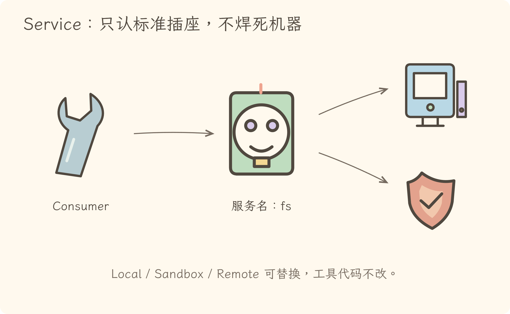
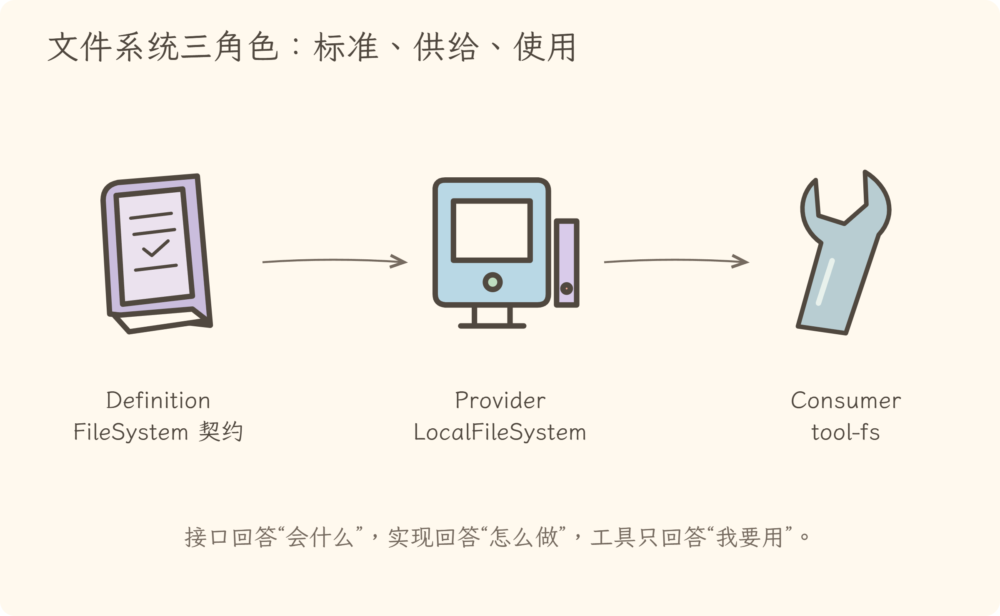
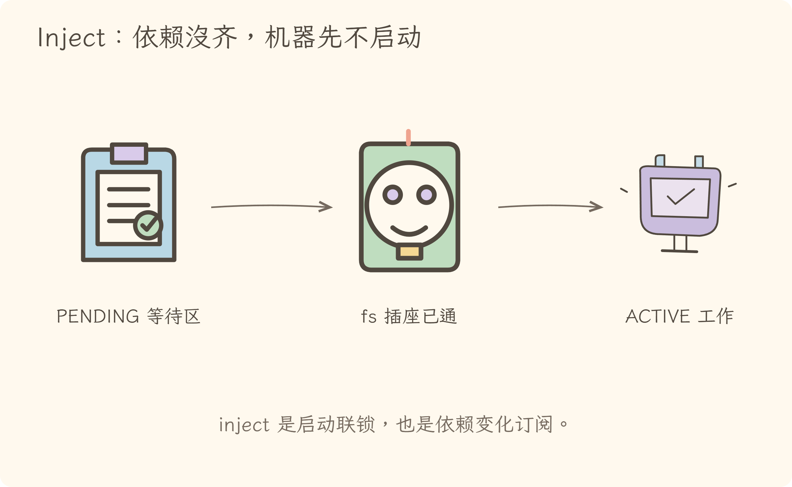
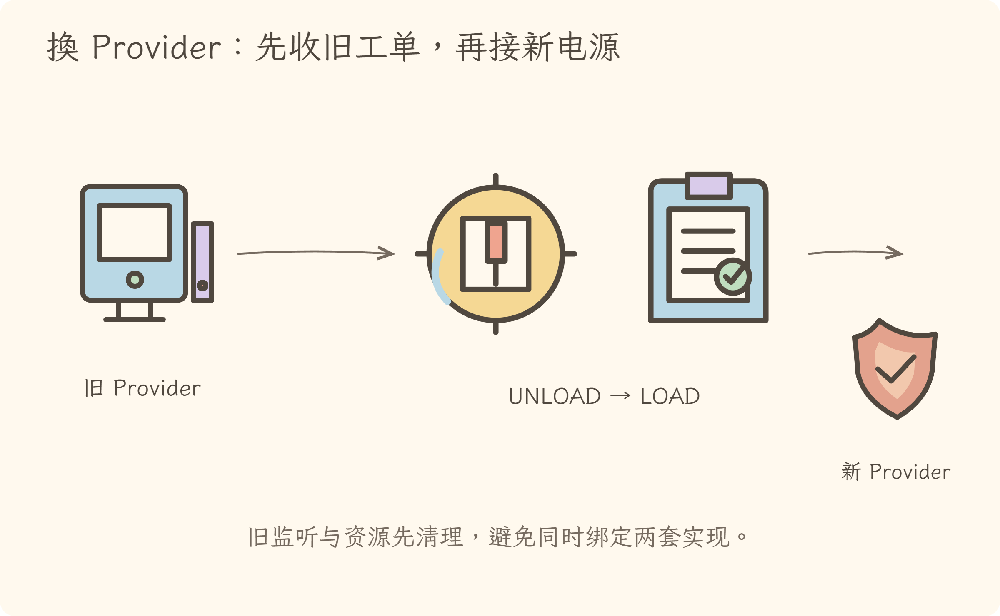
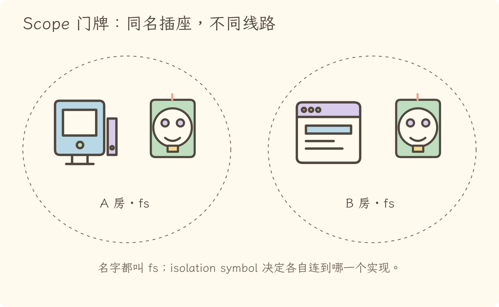

学习导航
第 7 次学习导航：只认插座，不焊死机器
源码快照：
cd5ef8148158c3a752a658978873241fdf8e2bbc
本讲追问：tool-fs 为什么只依赖 fs，就能在本地、沙箱或远程后端之间替换？
主比喻是标准插座：Definition 规定插口，Provider 供电，Consumer 用电，inject 是通电联锁，scope 是房间门牌。
源码快照：
cd5ef8148158c3a752a658978873241fdf8e2bbc
本讲追问：tool-fs 为什么只依赖 fs，就能在本地、沙箱或远程后端之间替换？
主比喻是标准插座：Definition 规定插口，Provider 供电，Consumer 用电，inject 是通电联锁，scope 是房间门牌。

稳定的是
fs契约；Local、Sandbox、E2B 等实现可以替换。

Definition 说“必须会什么”，Provider 说“具体怎么做”，Consumer 说“我要用什么”。

依赖没齐，Fiber 等待；依赖齐了，插件主体才运行。

inject还订阅服务实现变化，因此依赖替换不是静默改指针。

isolate 改变服务解析范围，不提供文件权限或进程隔离。
ctx.fs 看服务为何可替换源码快照：
cd5ef8148158c3a752a658978873241fdf8e2bbc
ctx.<name> 使用。这类似 Java 的接口、实现 Bean 与注入点，但 Cordis 进一步把可用性、scope 和插件生命周期绑在一起。
packages/fs/fs 扩展 Context，声明 fs: FileSystem，抽象类列出解析、读取、写入等契约。LocalFileSystem 继承该定义，构造时通过基类注册到 fs。tool-fs 声明 inject = ['tools', 'fs', 'systemPrompt']，具体读写代码调用 ctx.fs，不依赖 LocalFileSystem 类名。所以换成 fs-sandbox 或 E2B provider 时，工具层不必改写自己的读写业务。
Service 构造函数 最终调用 ctx.reflect.provide(name, self, check)。
provide() 记录服务名、对象和提供它的 Fiber，并把“撤销注册”登记成 effect。Provider 卸载，服务随之从当前 scope 消失。
inject 不是把对象塞进构造函数那么简单。它先声明必需服务名；Fiber 的 _refresh() 检查这些名字是否都能解析：
ctx.inject(deps, callback) 本质是带 inject 声明的小插件，因此 callback 也获得完整的清理与重载语义。
ctx.fs 看似普通属性却受控Context 是 Proxy。读取 ctx.fs 时，resolver 会检查当前 Fiber 的 inject 和可见 store。如果插件未声明必需服务，直接读取可能抛出 cannot get property ... without inject。
ctx.get('name') 是显式可选查询，语义不同：它可能返回 undefined，不要用它伪装必需依赖。
isolate('fs', label) 给 child Context 的 fs 分配独立 isolation label。Reflect store 按这个 symbol 查实现，因此 A 房的 fs 与 B 房的 fs 可以同名却连接不同 provider。
边界：这是依赖解析隔离，不是权限隔离。它不会像 OS 沙箱那样阻止 provider 访问磁盘。
Service 名称把“我要什么”与“谁来实现”分开；inject 把依赖可用性接入 Fiber 生命周期；scope 决定当前名字通向哪一个实现。
把 FileSystem、LocalFileSystem、tool-fs 分别归类。
FileSystem 是 Definition，LocalFileSystem 是 Provider，tool-fs 是 Consumer。
tool-fs 已安装但 fs provider 尚未加载，插件主体应立即执行并等第一次调用再报错吗？
不是。fs 是必需 inject；缺失时 Fiber 不激活，直到依赖满足。
若某服务只是锦上添花，为什么不应偷偷从 ctx.fs 直接读取？
普通服务属性读取受 inject 约束。可选能力应显式采用 ctx.get() 或项目既有的可选组合方式，并处理 undefined，让语义清楚。
两个 child Context 都 isolate('fs')，未给相同 label，它们能看到彼此的 provider 吗？
不能。它们获得不同 isolation symbol；只有显式使用相同 label 才加入同一 scope。
把 fs isolate 后，是否就能防止本地 provider 访问工作区外文件？
不能。isolate 只控制服务解析。路径与权限约束必须由 fs-sandbox、策略插件或更底层执行边界实现。
ctx.fs 使用。FileSystem → LocalFileSystem → tool-fs 是完整的定义、提供、消费链。工具无需知道后端类名，所以沙箱或远程后端可替换。
Cordis scope 是依赖解析范围，不是网络服务发现，也不是安全沙箱。
| 中文 / 英文 | 比喻 | 实际职责 | 边界 |
|---|---|---|---|
| 服务定义 Service Definition | 插座标准 | 声明名字、类型与能力契约 | 本身未必可运行 |
| 提供方 Provider | 真实电源 | 注册某服务名的实现 | 受提供 Fiber 生命周期约束 |
| 消费方 Consumer | 用电设备 | 声明并调用所需服务 | 不应依赖具体实现类 |
| 依赖注入 inject | 通电联锁 | 声明必需服务，并控制激活/重载 | 不只是参数传递 |
| scope | 房间门牌 | 决定当前服务名解析范围 | 不是安全隔离 |
| isolate | 独立线路 | 为指定服务创建独立 scope label | 同 label 可重新汇合 |
| optional lookup | 备用插座探测 | ctx.get() 查询可能不存在的服务 |
必须处理 undefined |